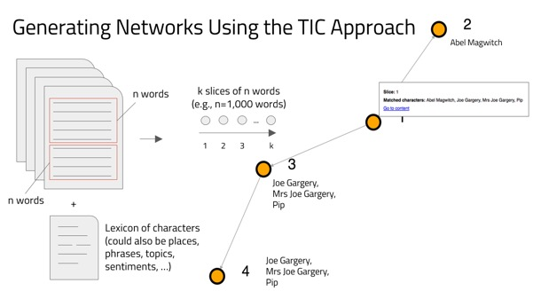

Applying Network Theory to the Serial Novel
Digital humanities scholars have been increasingly interested in analyzing literary texts using computational methods. These methods not only facilitate the analysis of large bodies of texts that cannot be “read” in the traditional manner, but also make visible linguistic and structure features of individual texts. Our project approaches novels as evolving information systems, and it is interested in understanding the properties of those systems with particular regard to the management of characters. The temporal dimension of the text is central to our analytical method, as we are interested in trying to isolate and treat quantitatively the development of character networks as they are created as novels unfold. Our work is grounded in the Transcendental Information Cascade (TIC) approach, which enables us to track how character networks are created and managed during the unfolding of the text. On the most basic level, our approach tracks where characters appear in the text and how that relates to the appearance of other characters. Our networks are different from traditional character networks in which each node in the network represents a character and the edges that connect nodes denote connections between characters (although our SATIS Tool Prototype also includes these traditional social networks). Instead, our dynamic networks map the unfolding of the text: each node represents a segment of the text (a 1000-word “slice”) and edges signify the shared information, in this instance the next appearance of a character within the text. See below for a description of how the dynamic networks are created and for an explanation of the various visualisations and features that you can explore using the SATIS Tool Prototype.
Creating the Dynamic Networks
The Dynamic Flow Networks in the SATIS Tool are created using two files: a file of the complete text of a novel and a “dictionary” of character names. The text is divided into “slices” of a given length—in this case, the default is 1000 words (though the end of a chapter will terminate a slice). Each node in the dynamic network represents one slice of the text (e.g., Node 1 represents the first 1000 words of the text, Node 2 represents words 1001-2000, and so on). Our algorithm scans the text of a slice and identifies which characters are present within that slice of text. Two nodes are linked if they contain consecutive appearances of a character. In the sample figure to the right, Nodes 1 and 2 are linked through the shared appearance of Abel Magwitch. Nodes 1 and 3 are linked through the shared appearance of Joe, Mrs. Joe, and Pip (and Nodes 3 and 4 are linked through the shared appearance of the same characters). Note that even though Pip appears in both Node 1 and Node 4, they are not linked because they are not consecutive appearances (i.e., he appears in Node 3 as well).

{kind=link}
{kind=link}